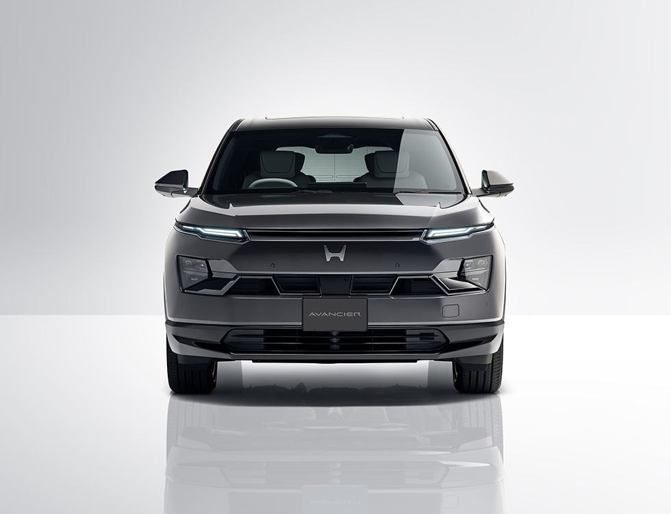
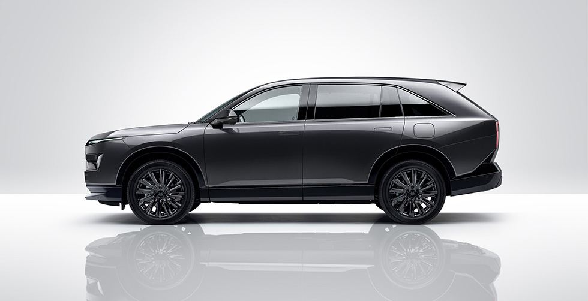
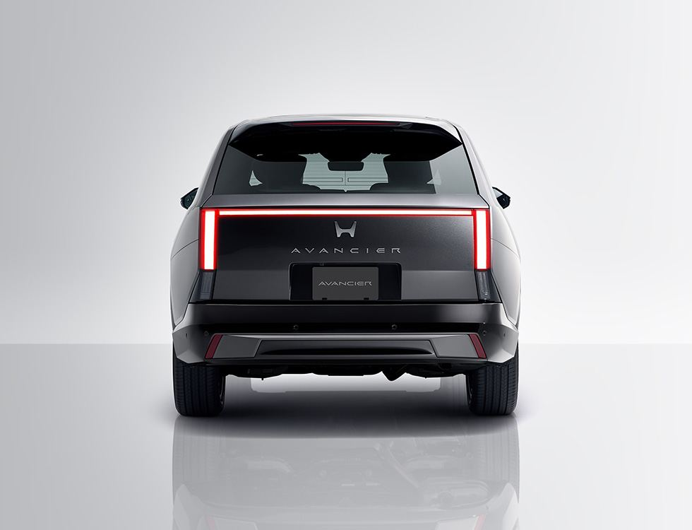
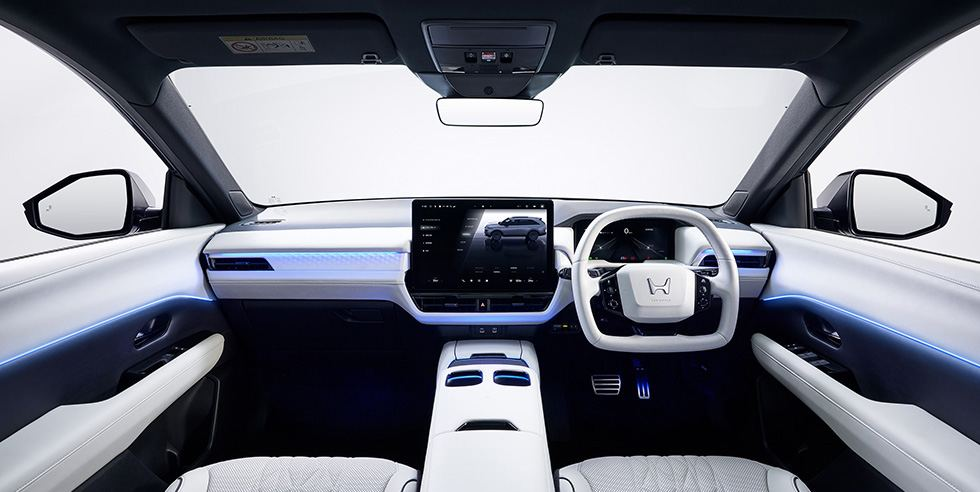
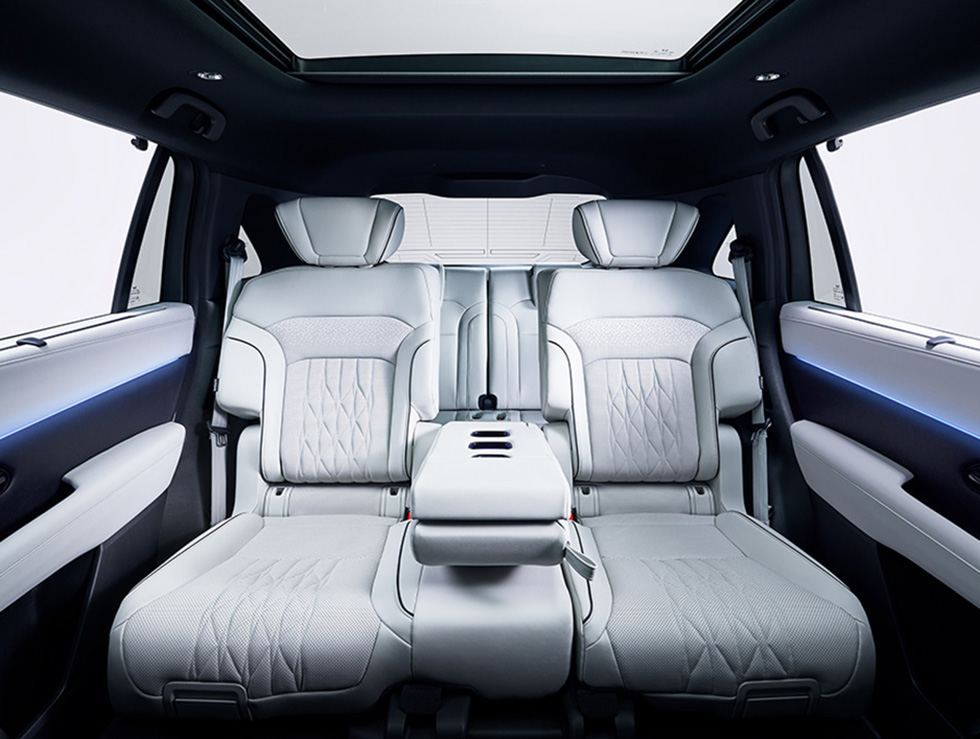

Honda · 全球首發 · 日本2026-11-20
Honda 全新 Avancier 全球首發：首款掛新 H 標的三排油電旗艦 SUV
Honda Presents World Premiere of All-new Avancier SUV
Honda 11/20 線上全球首發第二代 Avancier，是第一款掛上新 H 標、首搭新平台與次世代「Honda Hybrid」油電系統的車型。三排座 SUV 定位在 CR-V 之上，主打泰國、日本、中國等亞洲市場；Car and Driver 認為它的造型預告了下一代 CR-V。
設計解析 Design Notes
- 設計主題以「Grand-Journey」為概念，官方說法是「簡潔但精煉」的車身面處理，加上清楚的車身骨架與一點 SUV 的粗獷感。
- 燈號與前臉細長的多功能燈組配上大面積水箱護罩，前臉俐落而厚實。
- 側面與車尾水平基調、少稜線的側面；車尾收窄，直線與 90 度轉角構成的尾燈強調外擴的輪拱，站姿更運動。
- 整合細節平貼式外門把、薄型尾門擾流並把後雨刷藏起來，讓車身看起來更乾淨、更有未來感。
- 座艙前排儀表板幾乎不放實體按鍵，功能集中到大型中控螢幕並改用方向柱排檔；二排是左右大扶手的「禮車式」獨立座椅，全景天窗延伸到第三排。